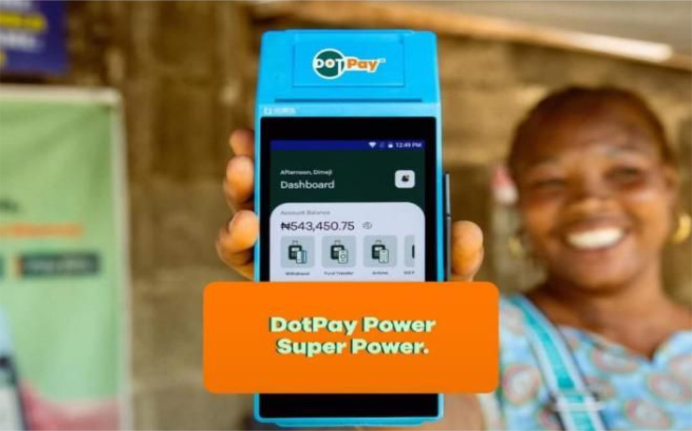
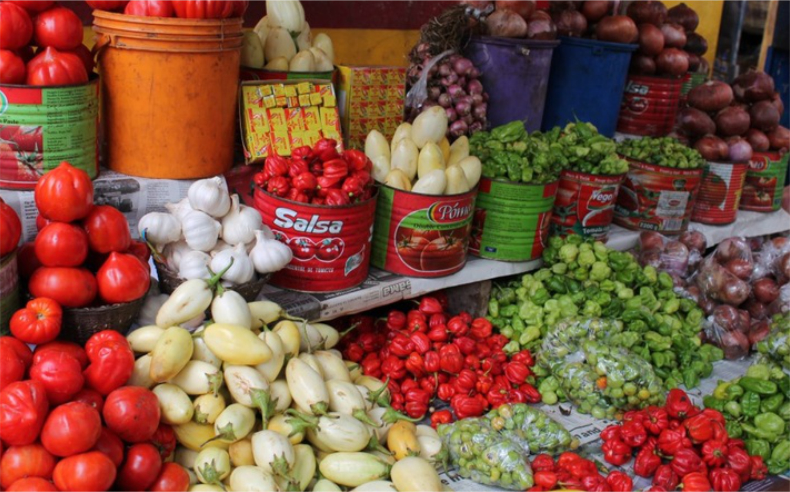
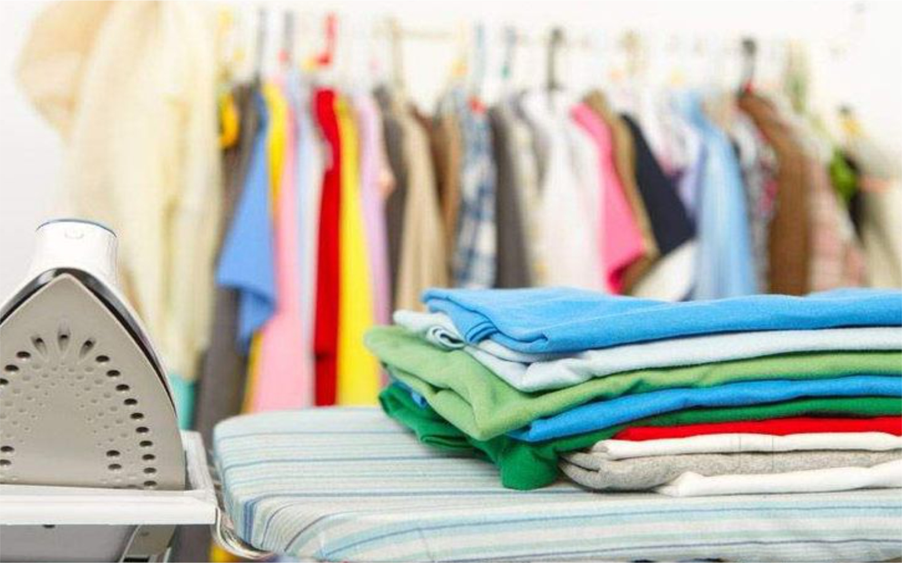
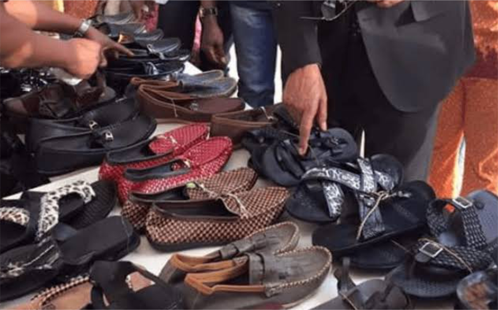
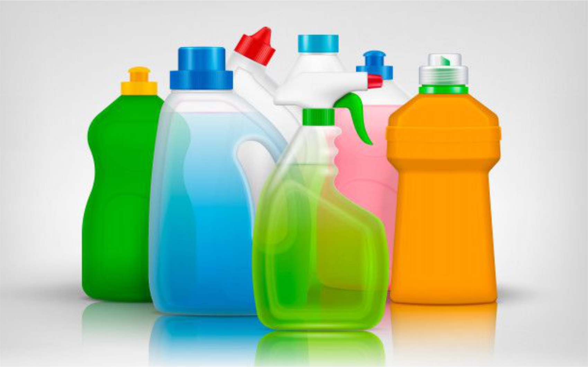
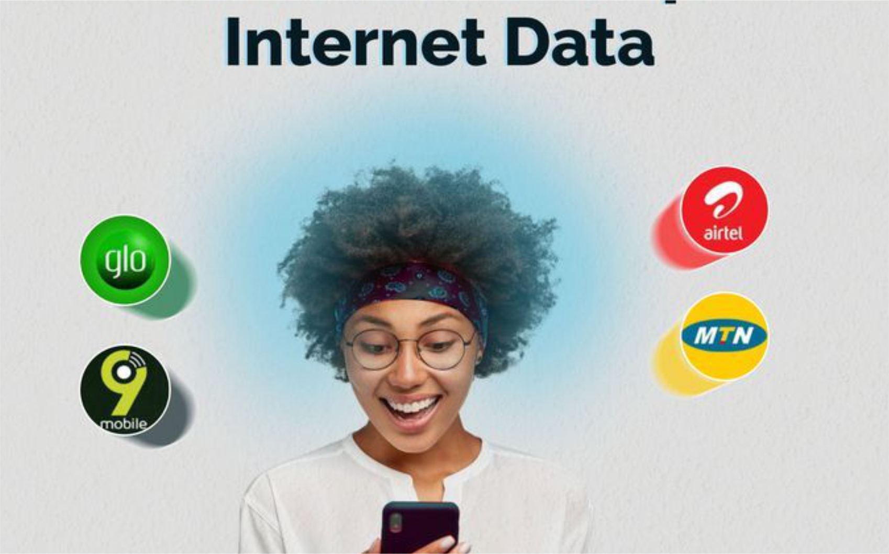
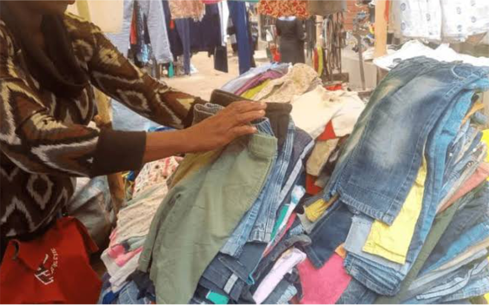

The business landscape in Nigeria is a fertile ground with ripped fruits waiting to be harvested. Irrespective of all the various factors that must have scared you away before now, bellow are ten different low capital businesses you can start in Nigeria.
 Photo credit | pinterest.com
Photo credit | pinterest.com
1.Sales Of Phone Accessories and Mini Electronics
With the increasing penetration of smartphones in Nigeria, the demand for phone accessories and mini electronics is on the rise. Items such as phone cases, chargers, earphones, power banks, rechargeable touch light and screen protectors are always in high demand. With as low as 200,000 naira one can venture into this business, you may need To start from home, selling online and in the neighborhood until you can afford a physical shop.
To start this business, you can source products from local markets or import them at low prices. Utilize online platforms like Jumia and Konga, as well as social media, to reach a broader audience.
Photo credit | pinterest.com
2. Barbecue and Grills Business
Nigerians love grilled food, making the barbecue and grills business a lucrative venture. With a small investment in a barbecue grill, some basic equipment, and ingredients, you can set up a grill spot in a busy area or residential neighborhood. The key to success is offering delicious and well-marinated meats and promoting your business through word-of-mouth and social media.

Photo credit | pinterest.com
3. POS Business
The Point of Sale (POS) business has become a popular venture in Nigeria due to the need for cashless transactions and banking services in underserved areas, such as villages and low population communities with little presence of functional commercial banks. With a small investment in a POS machine and a secure location, you can start with as low 100,000 naira, providing services like cash withdrawals, deposits, bill payments, and airtime recharge. Partner with reputable banks or fintech companies to get started.

Photo credit | pinterest.com
4. Sales of Food Items
Selling food items is a timeless business with a constant high demand. You can start by selling everyday foods such as rice, beans, and garri, or specialize in fresh produce like vegetables and fruits. Locate local markets and distributors close to you and buy from them. As a beginner you can start by Operating from a small shop or even selling from home to reduce overhead costs. Leveraging online marketplaces and delivery services can help expand your reach and upscale your growth.

Photo credit | pexels.com
5. Laundry and Dry Cleaning services
Laundry and dry cleaning services are essential for busy professionals, business men and students who out of their busy schedule may not be able to do all their laundry by themselves, hence they rely heavily on laundry shops for their laundry needs.
Though Starting this business requires a washing machine, as a beginner you may have to start with hand washing pending when you can afford a washing machine, other items you will need includes; pressing iron, detergents, and packaging materials. You can offer pickup and delivery services to add value and convenience for your customers. Good customer service and maintaining high hygiene standards will help you retain clients, get recommendations to prospective customers.

Photo credit | pinterest.com
6. Sales of Footwears
Footwears are essential items that makes up part of our daily needs, and the market is always thriving. You can start by selling affordable and fashionable shoes, sandals, and slippers.
With as low as 50,000 naira one can get started with selling Footwears, Source your products from local manufacturers. Online marketing through social media platforms and creating an e-commerce store or sales funnel can significantly help boost your sales and market penetration.
Photo credit | pinterest.com
7. Cakes and pastries baking
If you have a passion for baking, turning it into a business can be rewarding. You can start by baking cakes, shawarma and pastries, and bread from your kitchen. Offer customized cakes for events like birthdays and weddings to attract more customers. Promote your business through social media, and consider partnering with event planners and caterers for more exposure.

Photo credit | pinterest.com
8. Liquid Soap and Disinfectant Production
The demand for hygiene products has surged, making liquid soap and disinfectant production a viable business. With a small investment in raw materials and packaging, you can produce and sell these products. Attend training sessions or watch tutorials online to learn the production process. Market your products to households, schools, and businesses, emphasizing their quality and effectiveness. With the aid of social media sponsored ads you can reach new customers within your neighborhood and increase your sales.

Photo credit | pinterest.com
9. Data and Recharge Card Sales
With the growing need for internet and communication services, selling data and recharge cards can be a profitable business. You can start by purchasing data bundles and airtime from network providers at wholesale prices and selling them at retail rates. Use social media to reach more customers and offer incentives like discounts and bonuses to attract repeat business.

Photo credit | pinterest.com
10. Sales of Imported Second-Hand Clothes
Second-hand clothes, popularly known as "Okrika", are always in demand due to their affordability and quality. You can start by purchasing bales of clothes from wholesalers and selling them individually. Focus on sourcing trendy and well-preserved items. Setting up a small shop in a busy market or using online platforms to sell your clothes can help you reach a broader audience.
Starting a business in Nigeria with low capital is possible with the right idea and execution. These ten business ideas offer opportunities to tap into various markets and meet the needs of consumers. With dedication, creativity, and smart marketing, you can build a successful low capital business.
Read More posts